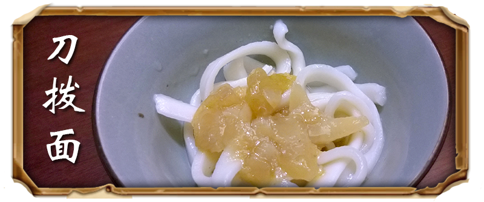
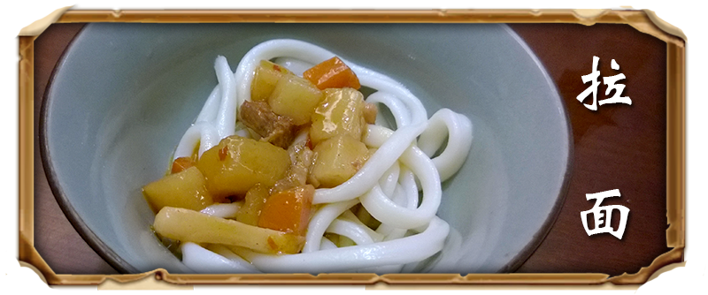
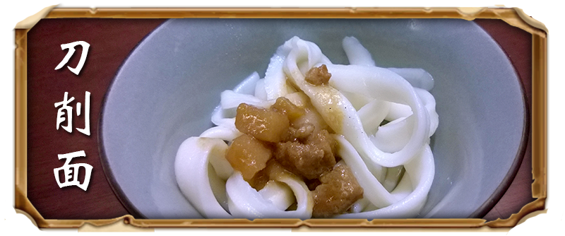
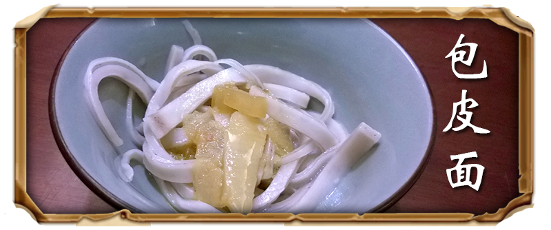
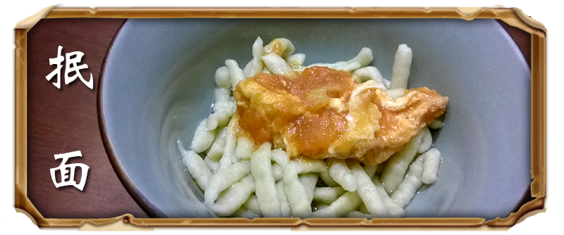
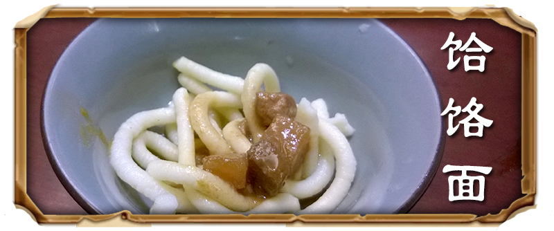

|  |
 |
| 刀拨面是山西一绝。拨面用的刀是特制的，长约60厘米，两端都有柄，刀刃是平的，成直线，不能带“鼓肚”。每把刀约2.5公斤左右重。用这种刀拨出的面十分整齐，粗细一致，断面成小三棱形，每根长半米有余。
刀拨面2009年被列入山西省第二批省级非遗名录的。 |
拉面，一种中国传统面食，后来演化成多种口味的著名美食如山西拉面、兰州拉面、河南拉面，龙须面等，拉面又叫甩面、扯面、抻面，是中国北方城乡独具地方风味的面食名吃。
清末陕西人薛宝展著的《素食说略》中说，在陕西、山西一带流行的一种“桢面条”做法以山西太原平定、陕西朝邑、同州为最。 |
|  |
 |
| 刀削面以山西刀削面最为著名。山西刀削面因其风味独特，驰名中外。
刀削面全凭刀削，因此得名。用刀削出的面叶，中厚边薄。棱锋分明，形似柳叶；入口外滑内筋，软而不粘，越嚼越香，深受喜食面食者欢迎。它与北京的炸酱面、河南的烩面、湖北的热干面、四川的担担面，同称为中国五大面食，享有盛誉。 |
包皮面，又称夹心面。相传古代晋中有位婆婆在家务活上经常给儿媳妇出一些伤脑筋的"难题"。一天，她让儿媳用白面和豆面擀面条，条件是不能将两种面事先和匀，而在吃的时候要有均匀感。
这位聪明的媳妇并没有被婆婆的题目所难倒，做成了两种面粉组成的包皮面。 |
 |
 |
| 猫儿面，一种面食。也称“麻食”、“麻什”、“麻食子”或者“麻什子”，是西北地区（尤其在陕西）的一道常见居家小吃。
其味道可口，形似猫儿，所以得名。猫儿面煮熟捞出，浇上臊子，臊子的汤汁可以进入猫儿面中的空隙，吃起来风味独特。 |
剔尖又称拨鱼、剔拨股，是流行于晋中一带的传统经典面食，以其方便快捷、口感香滑，利于消化而受到广大百姓的青睐，是山西面食中极具代表性的一种。
一般来说，白面、高粱面（一般要加榆皮面）、杂粮面、红面等都可以用来制作剔尖。白面剔尖，更是中部家庭妇女的拿手好戏，较红面剔尖速度更快，变化更大。 |
|  |
 |
|
豆面抿面是宁武的传统风味面食之一，它以独特的制法和鲜美的味感赢得了各个阶层和中外人士的赞赏。制抿面有专门的面具，为抿床，制出的抿面是圆条状。吃时配荤、素浇头皆可。
抿面的特点是面质滑柔利口，汤清味香，风味别致，富有营养。
|
饸饹面食一种汉族特色面食，制作者用饸饹床子（做饸饹面的工具，有漏孔）把和好的荞麦面、高粱面（现多用小麦面）放在饸饹床子里，并坐在杠杆上直接把面挤轧成长条在锅里煮着吃。
这种传统独特的饮食制作方式，不知从何时一直延续至今，成为中国北方地区独特的风味名吃。
|